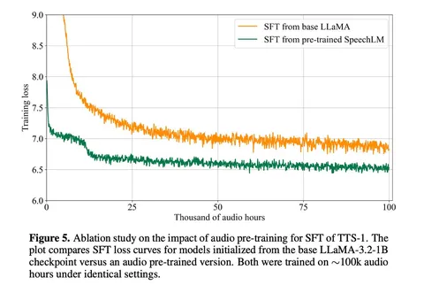
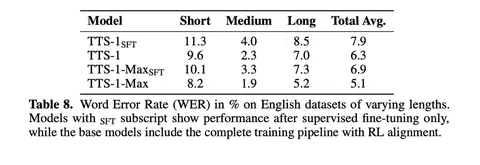
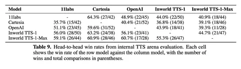

Продолжаем рассказ о техрепотре свежего TTS-движка американского стартапа Inworld.
SFT: что сработало, а что нет
После pretrain-стадии авторы переходят к SFT и алайнменту. На SFT используют около 200 тысяч часов транскрибированных данных. Для фильтрации отбрасывают 20% худших сэмплов по DNS-MOS, 5% самых быстрых и 5% самых медленных по символам в секунду, плюс применяются текстовые эвристики для удаления плохих транскрипций.
Авторы утверждают, что для качества синтеза было важно инициализировать learning rate для SFT финальным значением после стадии pretrain. Попытка подмешать text-based instruction-following данные, чтобы лучше понимать сложные промпты, привела к ухудшению стабильности синтеза, несмотря на отсутствие деградации лосса на аудиоданных. Ещё в работе есть аблейшн, который показал, что стартовать SFT с speech-pretrained LM заметно лучше, чем с LLaMA-3.2-1B-Instruct — и лоссу, и по метрикам WER и SIM.
RL-алайнмент и разметка стилей
Для алайнмента используют RL с GRPO, так как даже после SFT остаются клики, артефакты и ошибки произношения. GRPO позволяет оценивать несколько ответов на один и тот же запрос относительно среднего по группе, что даёт более стабильное обучение. Используется композитный реворд, включающий WER, similarity и DNS-MOS, а также отдельные награды для аудиотегов. WER считают с помощью Whisper-large-v3, similarity — через WavLM-Large. Утверждают, что единая модель с композитным ревордом работает лучше, чем модели, обученные под каждую метрику отдельно. В качестве аргумента приводят только графики GRPO.
Отдельный блок отведён стилям и невербальным эффектам. Попытка просто конкатенировать style-tag и текст не сработала — авторы объясняют это тем, что кодек смешивает семантическое и акустическое пространства, и стиль сложно изолировать от голосовых характеристик. Решением стал парный датасет: нейтральные и стилизованные высказывания одного и того же спикера, склеенные паузой 0,5–1,5 секунды, с использованием тега как разделителя. На один нейтральный сэмпл приходится от одного до пяти стилизованных, около 20% данных содержат невербальные вокализации, а примерно 30% — непарные нейтральные примеры для сохранения базового синтеза.
В оценке качества приходят к тому, что увеличение размера модели улучшает similarity и стабилизирует WER, а RL-алайнмент даёт прирост на коротких, средних и длинных сэмплах. Что интересно, на внутренней TTS-арене побеждают всех конкурентов, например, TTS-1-Max имеет win-rate 59,1% против 11Labs.
Инференс
Модели имеют два режима: мгновенный voice cloning по референсу и транскрипту и профессиональный voice cloning с LoRA-дообучением SpeechLM. Для стриминга сделана аккуратная склейка сегментов по участкам тишины, чтобы избежать щелчков, а также стабилизация громкости за счёт дополнительного контекста в аудиодекодере. Inworld вместе с Inference платформой Modular ускорил API за счёт асинхронного планировщика, батчинга в декодере, sparse-формата для penalty sampling и кастомных GPU-ядер на Mojo в составе MAX pipeline. Это даёт первые две секунды синтезированного аудио в среднем на 70% быстрее, чем через vLLM.
Какие есть проблемы
В конце авторы честно говорят и об ограничениях. Кэширование референса помогает снизить задержки, но может подтягивать стиль и эмоции из референсного аудио. Длинные последовательности хуже генерируются при коротких промптах, а параметры декодинга постоянно приходится балансировать между сходством с голосом и выразительностью. В целом, получилась довольно инженерная работа о том, как стартап оптимизирует качество, задержки и стоимость — без архитектурных откровений, но с массой практических деталей.
Владимир Гогорян
